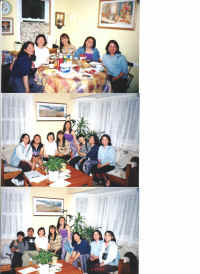
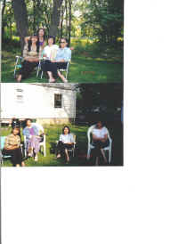
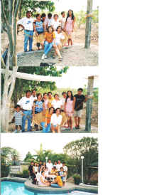
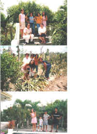
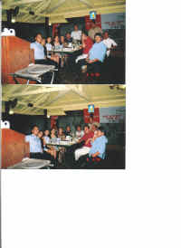

Yahoo! Groups : qcshs-75-alumni Messages :Message 5413 of 5418Groups
From: Tesz
Date: Tue Jun 4, 2002 12:55 am
Subject: THANK YOU VERY MUCH!!!
Sabi ko mag-scan lang ako ng photos pero marami akong dapat pasalamatan so write muna ko.
Sa Manila Group-enjoy talaga ako sa farm ni Iris coz parang high school
days.Lalo na nang magsuggest si Jerry ng larong truth or consequence.As
usual,thanks kay Connie sa walang sawang paghatid at sundo sa akin.Kay Carol,sa
pagtulong sa NAWASA problem ko.Kay Iris,sa blow out sa Via Mare plus all the
pasalubong.Kay Ariel,for the personalized CDs.Plus the rest of the group for
the food,drinks,etc.Thank you Jerry dahil pinasakit mo ang tummy namin sa
kakatawa.And also Alvin,dahil pumunta ka sa Manila just to be with us.Don't
forget your promise pag pumunta kami nila Iris sa Singapore,ha. Thank you Oyet
and Bobot sa blowout sa Viajeros at GQ (tama ba?).Alam namin na gusto nyo nang
umalis kaming girls pero di nyo masabi.Saan ka ba naman makakita ng Karaoke Bar
pero may bold show.hahah
Sa mga taga NY-thank you very much sa party.Kay Cherith,for inviting us sa
hacienda nya.Pati na din kay Sonny for preparing the spareribs and broiled
fish.Kay Nina,Aleli and Edna for all the food that you brought.Edna,thank you
very much fot taking me home kasi No Show si Tics. ;) Tics-alam ko naman
that you tried kaya lang natraffic ka.Thanks for the concern.
Sa mga taga SFO-thank you for entertaining us while we're having our
gettogether sa New Jersey.Caloy-naubos ang battery ng cellphone mo sa
kakakwento,no?Owie-wait for the other lantern.Wag ka magalala-dadating yon bago
magChristmas 2002.Mila-maraming salamat sa pagbook mo sakin sa hotel.Di ko
nagamit coz nagdasal si Art ng taimtim para makasakay ako dahil ayaw na nyang
maglimo service at magporter.hahahThank you guys,hopefully I'll see you before the 2003.
Sa mga taga LA-di ko kayo inabandon.Nagkataon lang na mas malakas ang tawag
ng dugo.NAKS!Alam nyo naman na nagbabysitter ako dahil nag SOS ang sister
ko.Change venue muna ko dahil nagrereklamo na si Art sa kakadala ng mga imemail
ko.hahah Tanna and Tanya-thanks for the gifts.Gamit gamit ko na.Art and
Norma-thank you very much sa pagalaga nyo sakin.Art-kung nabali ang likod
mo,wag kang mag-alala;mas mabigat pa ang susunod kong dala. :)
Maraming Maraming Salamat sa inyong lahat!Proud na proud ako ikwento ang
batch natin.Nagugulat lang sila pag sinasabi kong Batch 75 kasi mukha pa tayong
Bagets.
Ayan,di talaga ako magaling magsulat kaya lang sinikap ko dahil kailangan
kong magpasalamat from the bottom of my heart.Yong mas mahabang kwento-bahala
na ang iba coz ang assignment ko lang talaga ay mag-scan.Pero parang nobela na
ito,no?
Miss you all!!!Take care and Thank you very much!!!
Tesz
__________________________________
www.edsamail.com
click on picture to enlarge
at Cherith's    
picnic at Iris' farm
at Viajero 
{kind=link}
{kind=link}
{kind=link}
{kind=link}
{kind=link}
{kind=link}
{kind=link}
{kind=link}
{kind=link}